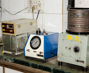
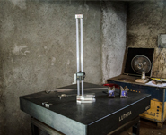
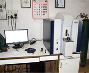

QMS
 Quality is paramount for
Nikoo Technocast. The superior quality raw materials used
in the
manufacturing process include CRCA Scrap,
Copper, Iron Silicide (FeSi), Magnesium Silicon Ferro-Alloys (FeSiMg), etc.
Quality is paramount for
Nikoo Technocast. The superior quality raw materials used
in the
manufacturing process include CRCA Scrap,
Copper, Iron Silicide (FeSi), Magnesium Silicon Ferro-Alloys (FeSiMg), etc.
All these sourced raw materials undergo stringent chemical and physical analysis to check their
productivity.
The chemical tests conducted during the manufacturing process are Optical Emission Spectrometer
(Bruker
USA make) 29 channels, Microstructure by Image Analyzer, wet lab analysis of ferrous alloys, and C,
Si,CE.
Control by Ferro Lab Thermal Analysis, AFS Sieve Analyzer, Compatibility & Permeability Meter etc. A
team of quality control professionals also performs physical testing with 250-3000 kgs. Brinell
hardness
tester, 200 kN tensile testing machine and other technology based equipments.

Measurement - Equipment1

Measurement - Equipment2
